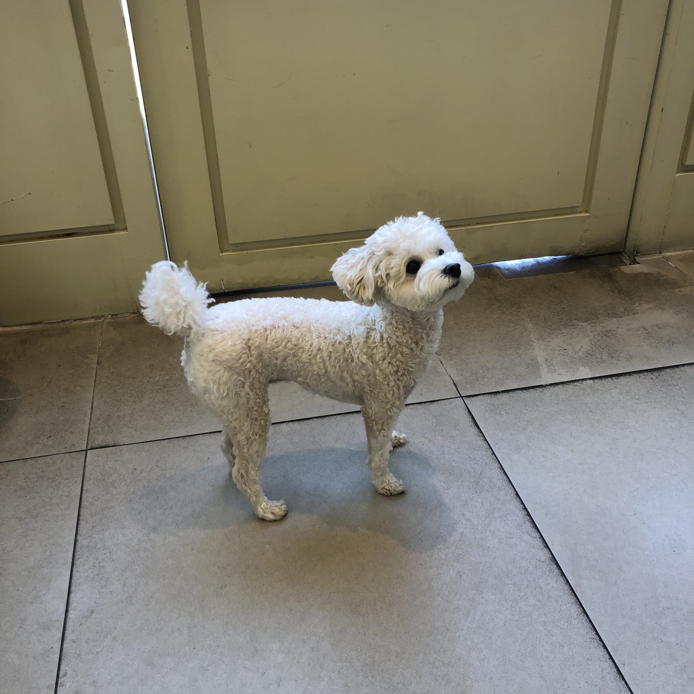

(1) 행궁동 오카롱의 구석탱이
마카롱. 재작년 즈음 유행이 크게 휩쓸면서 마카롱 가게들을 보기 쉬워졌다.
카페가 즐비한 행궁동 역시 마카롱 가게가 여럿 있는 편인데 그 중 오카롱은 행궁동 초입에 있어서 지나갈 때마다 스윽 보게 된다.
지나치며 오카롱의 오는 감탄사인지 사장님의 성씨를 딴 건지 항상 혼자 궁금해한다.
그러던 비 오는 어느 날, 갑자기 마카롱이 먹고싶은 거다. 배달 어플로 포장 주문을 하고( 꽤 편함) 슬리퍼를 질질 끌고 가서 우산을 접고 오카롱 문을 여는데..
순간 쫄래쫄래 나타나는 흰 토이푸들.
풀썩 앉아서 인사를 하니 내 무릎에 코를 박고 한참을 킁킁거린다.우쭈쭈하며 쓰다듬는데 손길을 받는 모습이 순하고 익숙하다.
잠깐 같이 놀다가 주문한 마카롱을 받아들고 손인사를 건네며 집으로 돌아왔다.
다음날 당 떨어지는 4시, 난 다시 오카롱에 도착했다. 마카롱이 생각은 났었지만 오카롱을 갈 생각은 아니었는데 말이지.
거침없이 오카롱의 문을 밀고 들어가 탱이를 찾지만 없다. 마카롱을 츠언츠언히 고르고 고르는데도 탱이가 보이지 않는다..
결국, 두어 개 즈음 고르고 사장님께 탱이의 행방을 물으니 가게 안쪽에서 주무시고 계시다고....ㅎㅎ
아쉬워하며 마카롱을 받는 순간. "나오네요, 강아지. " 하시는 사장님.
처음처럼 쫄래쫄래한 걸음으로 나오는 탱희를 반기며 인사하는데 뒷걸음친다. 두 번 만에 너무 친한 척했나보다.
나혼자 아쉬운 작별인사를 건네고 가게를 나오면서 다짐한다. 내 마카롱은 오카롱.
그렇게 오카롱에서의 즐거웠던 기억 덕에 조금은 가벼운 마음으로 내 첫 인터뷰를 시도해보았다.
나 : 탱이 이름은 어떻게 지으셨어요?
사장님 : 아.애기때.. 처음 데리고 왔을 때, 구석에 좀 박혀있어서 구석탱이 이런 느낌으로 지었어요.
나 : 나이는 몇살이에요?
사장님 : 1살이에요.
나 : 탱이 성격은 어때요?
사장님 : 사람 좋아해요 가끔 사람에게 짖는 경우는 너무 신나서.
나 : 수원에 거주중이세요?
사장님 : 동탄에 살아요.
나 : 탱이 데리고 출근하는 거예요?
사장님 : 네네.
나 : 일하는 공간에 반려견과 함께 있는 게 어떠세요?
사장님 : 힘들 때 한번씩 좋죠. 그럴 때 쳐다보고있으면 좋죠.
나 : 탱이는 사장님께 어떤 아이인가요?
사장님 : 소중하죠. 사람만큼의 그 정도는 아니어도 키우는 동안에는 최선을 다해야죠.
사장님은 내 소소하지만 떨리는 인터뷰에 차분하고 친절하게 응해주셨다.
좋은 소스가 되길 바란다고 응원해주시는 말씀에 한번, 세 번째 따뜻한 기억을 만들어 주심에 또 한번 감사했다.

(2) 행궁동 그래비테이트, 첫 데이트
세 달 정도 유기견 임시 보호를 했었다.
이름은 율무인데 정말 사랑스러운 아이였다. 사람에게 버림 받았지만 율무는 여전히 사람을 좋아했다.
서로의 품을 내어주며 자고 먹던 시간들이 끝나갈 즈음,
나는 율무와 추억을 만들고 싶어서 무리하지 않는 선에서(율무는 사상충 치료 때문에 장시간 산책과 심한 흥분을 하면 안 됐다) 애견 동반 카페를 검색했다.
주말에 친구들과 율무와 함께 그래비테이트를 방문했다.
그래비테이트의 높다란 바의자에 앉아서 보는 겨울의 허허벌판과 나무 뷰는 꽤나 괜찮았다. 율무도 한껏 몰려드는 자연 냄새에 코를 킁킁거렸고.
나는 어떤 곳에 가면 그 곳만의 시그니처 음식을 시키는 타입인데 그래비테이트라는 간판답게 메뉴판에는 뉴턴의 사과, 소행성 등 물리 느낌이 났다.
뉴턴의 사과와 필터커피, 라떼와 모카를 시켰는데 뉴턴의 사과는 안 쪽에 더블비얀코 맛 소르베 맛이 났다. 이색적인 디저트에 익숙한 맛이라 나쁘지 않았다.
게다가 좋아하는 사람과 개와 함께 먹는 맛난 것은 아주 꿀맛이었다.
(율무는 강아지용 과자를 따로 사와서 먹였다. 참고로 그래비테이트에는 반려동물 전용 음식은 판매하지 않는다.)
.
.
.
율무는 지금 좋은 주인을 만나서 행복하게 잘 산다.
내 옆엔 없지만 그 때 율무와 함께 좋은 곳을 방문했던 기억은 언제든 떠올릴 수 있다.
그래서 율무와 친구들과의 멋진 경험을 선사해준 그래비테이트에게 고맙다.